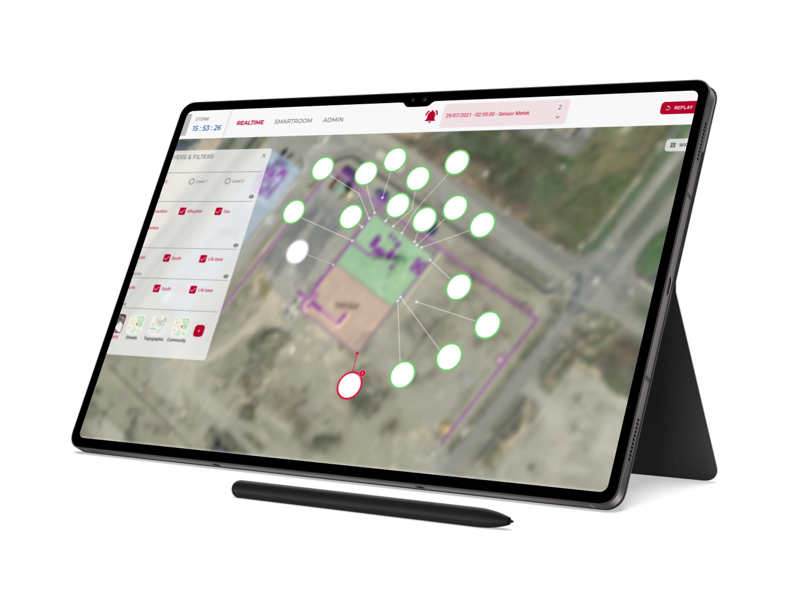
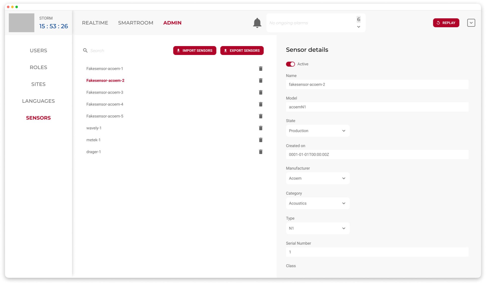
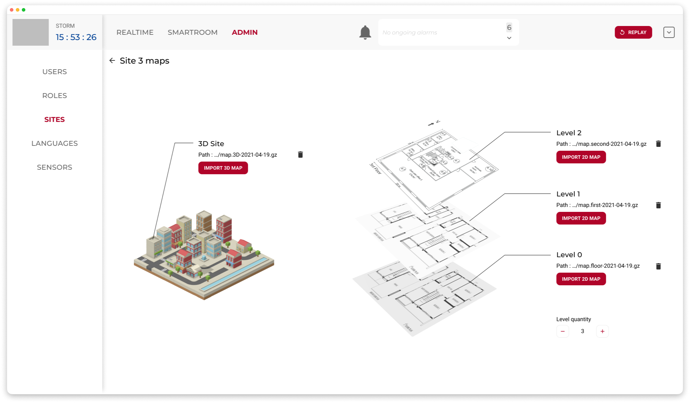

Logiciel de supervision industrielle
Contexte
Conception d’un logiciel de supervision destiné à la surveillance de sites industriels à hauts risques, utilisé quotidiennement par les opérateurs pour assurer la sécurité et le suivi opérationnel.
Objectifs
Créer une interface agréable et claire, permettant de rendre les informations sensibles immédiatement visibles tout en évitant de surcharger l’attention des utilisateurs dans un contexte critique.
Rôle & démarche
- Analyse fonctionnelle des besoins des opérateurs et des contraintes métier ;
- Conception d’une charte graphique et d’un design system pour garantir cohérence et évolutivité ;
- Maquettage haute-fidélité sur Figma pour représenter les parcours et éléments critiques de supervision.
Impact / Résultats
- Design System utilisé comme référence pour les évolutions et mises à jour futures ;
- Amélioration de la cohérence visuelle et fonctionnelle de la plateforme.


